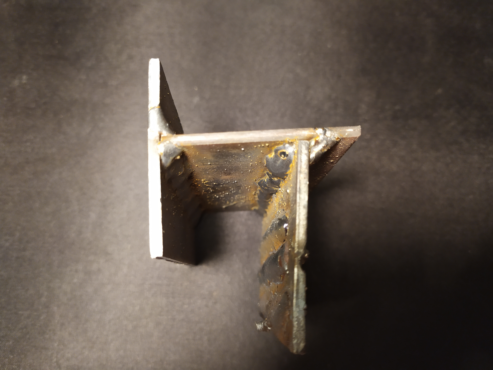

- Két fröccsöntött polimer kanál, egyik gyártási hibás (egyedi). Megfigyelhető rajtuk egy Nyíregyháza felirat.
- Egy lapos fémdarab, ami eredetileg egy négyzet átmérőjű rúd volt, amit kilapítottunk egy elég menő hengerrel. A darabot egy hosszabb egészből vágtam le.
- Egy hegesztett, fém cucc. Hihetetlenül jól hegesztett (személyem által), és kifejezetten egy cucc.
- Képem ugyan nincs róla, de a kollekció része még egy szén- és üvegszálas kompozit tányér, ami épp egy kolléga ablakában szárad.


